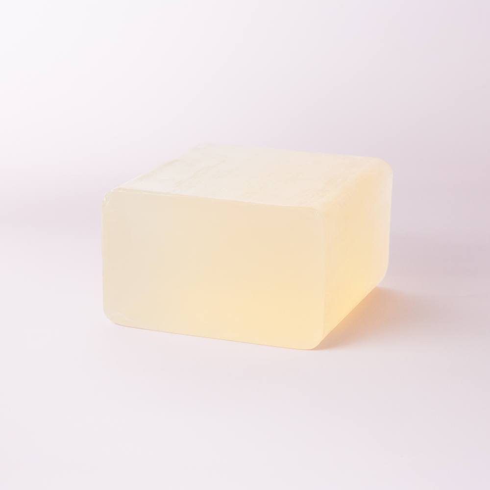
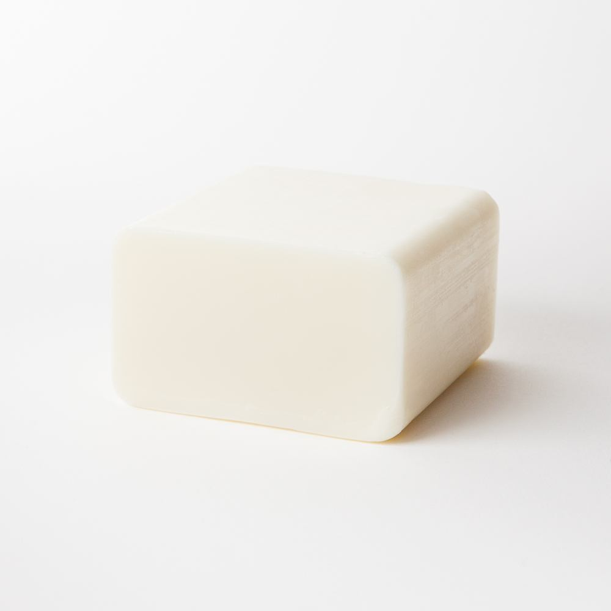
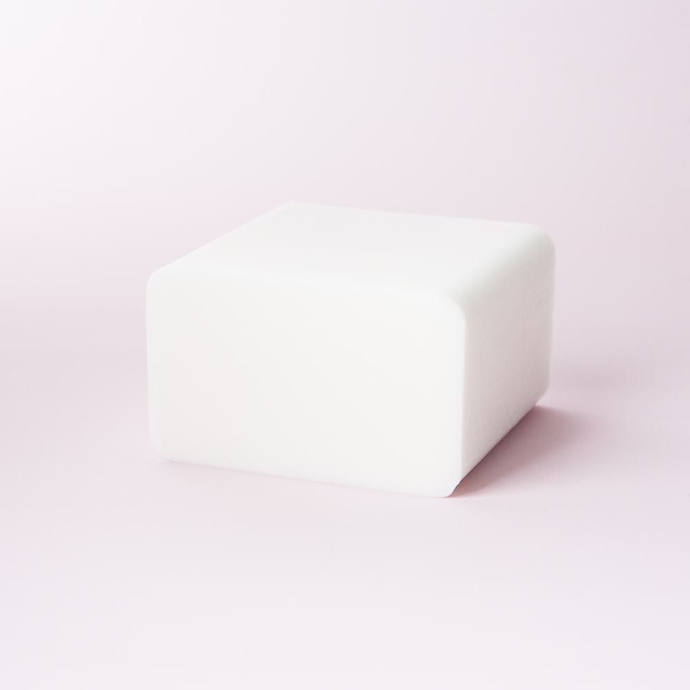

SFIC Olive Oil Melt And Pour Soap Base
Melt-and-pour soap base with added olive oil; follow the official melting and use instructions.
View official product ↗SOAPMAKING • MATERIALS DESK
Compare melt-and-pour bases, prepare a material estimate and keep formulation decisions with the official instructions.

Three real references. Confirm options, prices and availability at the official store.
Melt-and-pour soap base with added olive oil; follow the official melting and use instructions.
View official product ↗
Ready-made soap base containing liquid goat milk; confirm ingredients before use.
View official product ↗
Shea melt-and-pour base from the SFIC range; review the ingredient and handling information.
View official product ↗YOUR LOCAL SHORTLIST
Your selection stays in this browser. It does not reserve products or submit orders.
The catalog includes ready-made melt-and-pour bases.
Official product pages include ingredients and usage information.
Bramble Berry publishes separate beginner guides, lye and fragrance calculators.